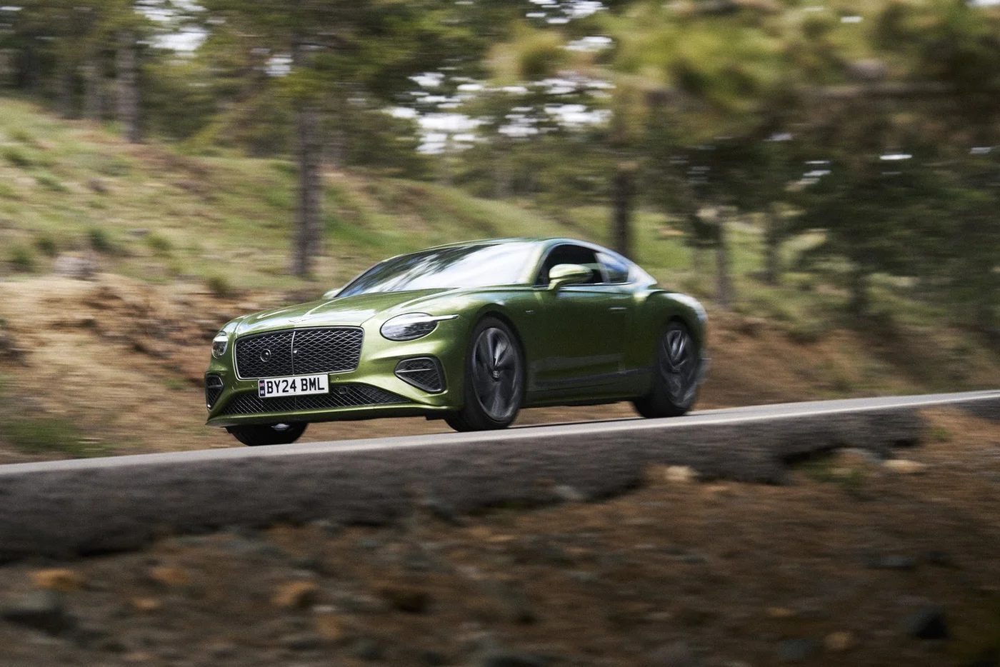
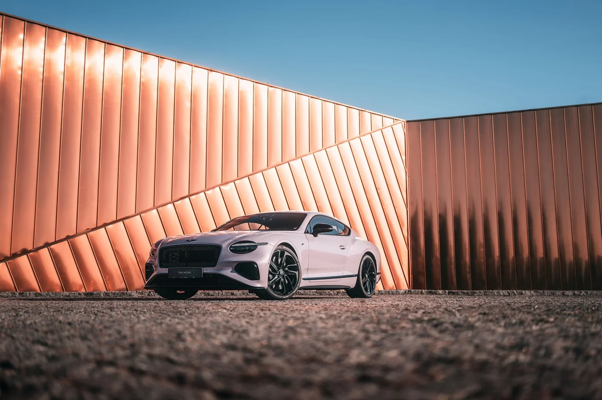
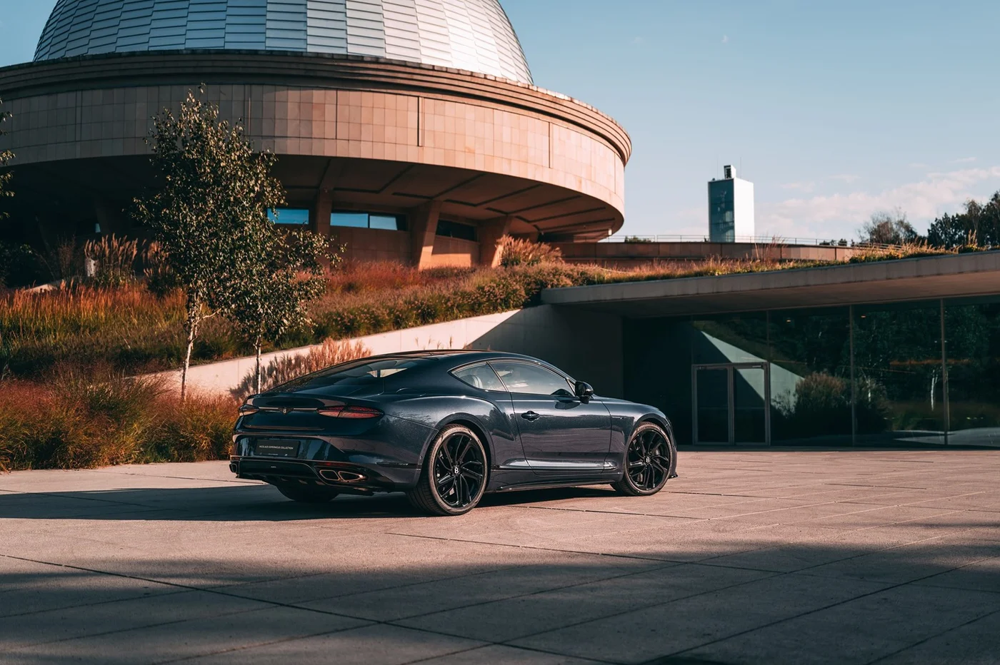
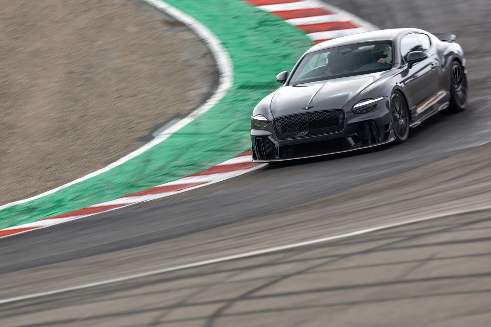
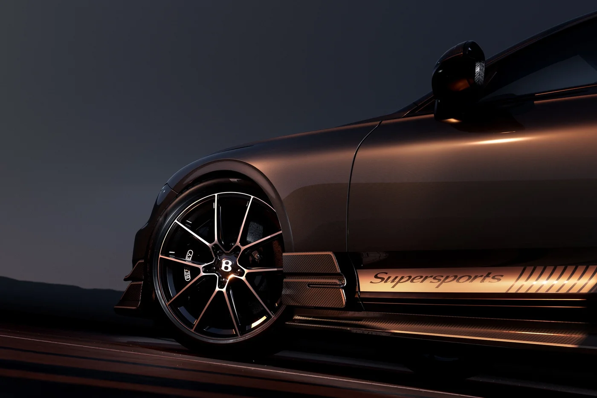
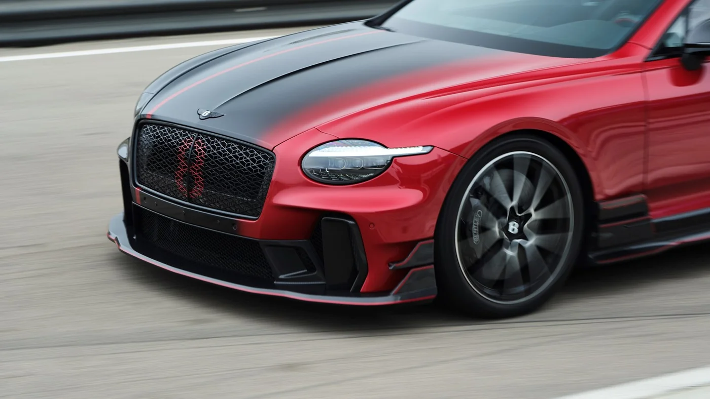
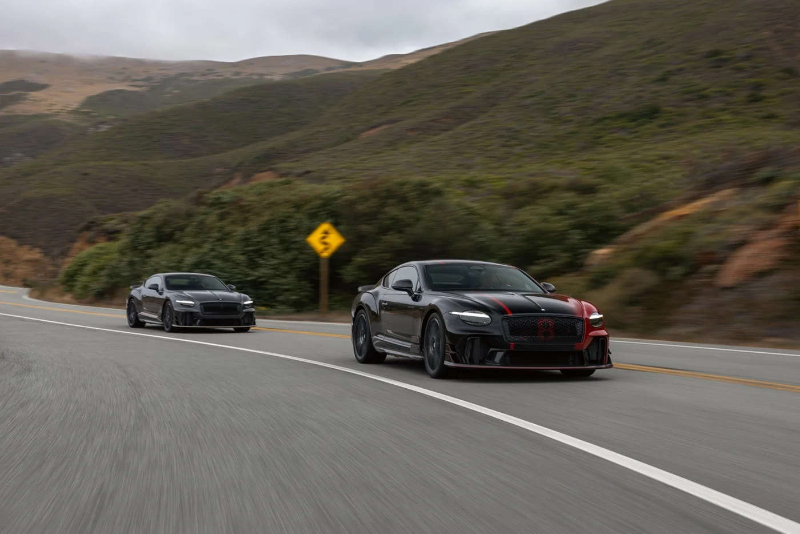
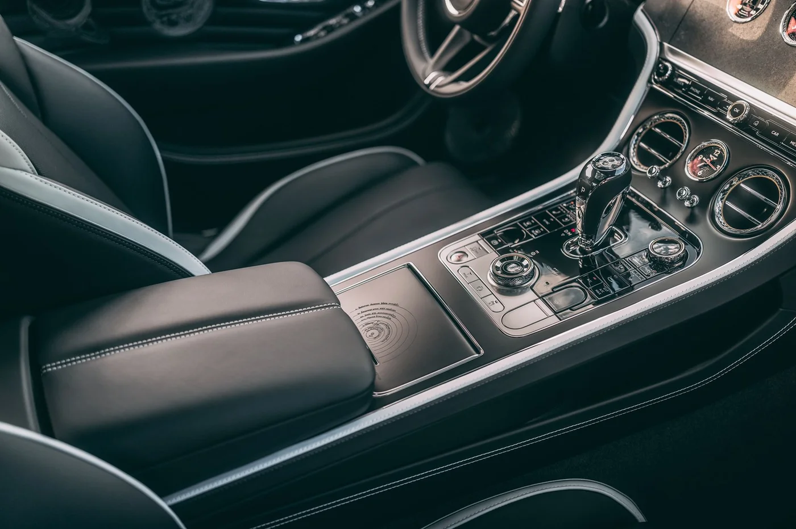
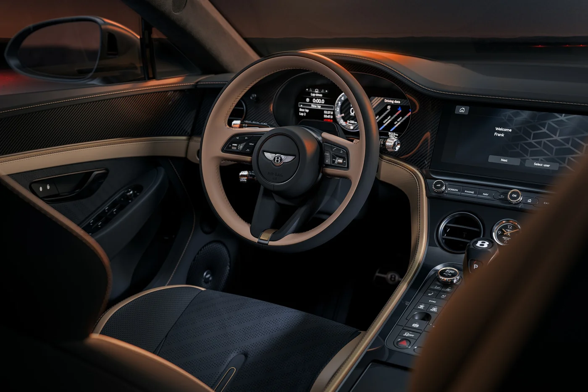

▲ 2027년형 벤틀리 컨티넨탈 GT — 하이브리드 라인업에 후륜구동 슈퍼스포츠가 합류했다
"뒷좌석을 뜯어내고, 전기 모터도 내렸다." 2027년형 벤틀리 컨티넨탈 GT 라인업의 가장 큰 변화는 이 한 줄로 요약된다. 하이브리드 일색이던 컨티넨탈 GT에 비하이브리드 4.0리터 V8, 후륜구동, 2인승 구성의 '슈퍼스포츠'가 합류했다. 카앤드라이버는 2027년형 컨티넨탈 GT의 새 소식으로 이 슈퍼스포츠를 꼽았다. 이 글은 벤틀리 공식 프레스룸 자료와 카앤드라이버 시험 데이터를 바탕으로 2027년형 컨티넨탈 GT의 파워트레인·성능·가격·출시 시기를 정리했다. 벤틀리의 전기차 전략이나 첫 전기 SUV '토르칼'은 이미 다룬 만큼, 여기서는 컨티넨탈 GT 자체에 집중한다.
1. 2027년형 컨티넨탈 GT, 라인업부터 정리한다
컨티넨탈 GT는 쿠페(GT)와 컨버터블(GTC) 모두 4.0리터 V8 플러그인 하이브리드가 중심이다. 카앤드라이버에 따르면 대부분의 컨티넨탈 GT는 트윈터보 V8과 전기 모터를 결합한 하이브리드이며, 총 출력은 최대 771마력이다. 여기에 비하이브리드 슈퍼스포츠가 657마력으로 더해졌다. 기본 트림의 출력은 671마력, 스피드·뮬리너 트림은 771마력이다.

▲ 벤틀리 컨티넨탈 GT 쿠페 — 단일 헤드램프를 처음 도입한 4세대 디자인 ⓒ Bentley Motors 프레스룸
| 구분 | 파워트레인 | 시스템 출력 | 구동·좌석 |
|---|---|---|---|
| GT 기본·S 계열 | V8 4.0 트윈터보 + 전기 모터(하이브리드) | 약 671마력(680PS) | AWD, 4인승 쿠페·컨버터블 |
| 스피드·뮬리너 | V8 4.0 트윈터보 + 190PS 전기 모터 | 최대 771마력(782PS), 1,000Nm | AWD, 4인승 |
| 슈퍼스포츠(신규) | V8 4.0 트윈터보, 비하이브리드 | 657마력(666PS), 800Nm | RWD, 2인승, 500대 한정 |
2027년형 컨티넨탈은 쿠페(GT)와 컨버터블(GTC) 모두 기본형·아주르·뮬리너·스피드 같은 트림으로 나뉘며(카위크 집계), 여기에 슈퍼스포츠가 별도 한정 모델로 얹힌다. 벤틀리 프레스룸은 4세대 컨티넨탈 GT가 단일 헤드램프를 채택한, 1950년대 이후 첫 주류 벤틀리라고 설명한다. 이 디자인은 코치빌드 모델 바칼라·바투르에서 출발한 새 디자인 DNA를 따른다는 것이 벤틀리의 설명이다.
2. 하이브리드 파워트레인 — 782PS, 그러나 2.4톤이 넘는다
벤틀리가 '얼티밋 퍼포먼스 하이브리드'라 부르는 스피드의 시스템은 782PS·1,000Nm이다. 4.0리터 V8과 190PS 전기 모터가 함께 일하며, 벤틀리는 0→60mph 3.1초, 순수 전기 주행 약 50마일(81km, 유럽 기준), 총 주행거리 534마일(859km)을 제시한다. 카앤드라이버가 직접 잰 스피드 쿠페의 0→60mph는 2.8초, GT S는 3.0초였다. 반면 무게는 만만치 않다. 카앤드라이버 시험 차량(2025년형 스피드)의 공차중량은 5,415파운드(약 2.46톤)였다.

▲ 컨티넨탈 GT 후면부 — 하이브리드 모델은 배터리 탓에 공차중량이 2.4톤을 넘는다 ⓒ Bentley Motors 프레스룸
| 항목 | GT S(2026년형 시험) | GT 스피드(2025년형 시험) |
|---|---|---|
| V8 + 모터 출력 | 512hp + 188hp = 671hp | 591hp + 188hp = 771hp |
| 0→60mph(시험) | 3.0초 | 2.8초 |
| 공차중량 | 5,530lb(약 2.51톤) | 5,415lb(약 2.46톤) |
| 제동(70→0mph) | 172ft | 167ft |
| 시험 기준 시작가 | 296,150달러 | 305,250달러 |
EPA 기준 전기 주행 가능 거리는 30마일, 연비는 도심 17mpg·고속 22mpg·복합 19mpg다. 카앤드라이버가 GT S로 실제 전기만으로 달린 거리는 49마일이었다. 배터리 용량은 카앤드라이버가 21.8kWh로 표기했는데, 유럽 제원표 기준으로는 총용량 25.9kWh, 실제 쓸 수 있는 순용량이 약 22kWh로 소개돼 같은 배터리를 총용량·순용량으로 달리 적은 것으로 보인다(추정). 한편 국내 인증 전기 주행거리는 66km로 보도됐다(세계일보 2025년 11월 보도). 인증 기준이 달라 수치가 다르므로 비교할 때는 같은 기준끼리 봐야 한다.
3. 슈퍼스포츠 — "벤틀리 역사상 가장 운전자 중심"
슈퍼스포츠는 컨티넨탈 GT 역사상 처음으로 후륜구동을 채택한 모델이다. 벤틀리는 2025년 11월 14일 '슈퍼스포츠: 가장 운전자 중심적인 벤틀리'를 공개했고, 이름은 100년 전 1925년 처음 나온 '슈퍼 스포츠'에서 따왔다. 하이브리드 시스템을 걷어내고 강화한 4.0리터 트윈터보 V8을 얹어 출력 666PS(657bhp), 토크 800Nm를 낸다. 리터당 166.5PS로 벤틀리 엔진 중 출력 밀도가 가장 높다. 변속기는 재개발한 ZF 8단 듀얼클러치다.

▲ 서킷을 달리는 슈퍼스포츠 — 후륜구동·2인승·2톤 미만 공차중량이 핵심이다 ⓒ Bentley Motors 프레스룸
| 항목 | 내용 |
|---|---|
| 엔진·출력 | 4.0리터 트윈터보 V8(비하이브리드), 666PS(657bhp)·800Nm |
| 구동·변속기 | 후륜구동, 8단 듀얼클러치, 전자식 LSD·토크 벡터링 |
| 공차중량 | 2,000kg 미만 — "85년 만에 가장 가벼운 벤틀리" |
| 성능 | 0→60mph 약 3.4초, 최고속도 약 199mph(현재 공식 페이지). 2025년 11월 최초 발표 당시는 0→100km/h 3.7초, 약 192mph(310km/h) 잠정치 |
| 공력 | 벤틀리 양산차 중 가장 큰 프런트 스플리터, 고정 리어윙 등으로 컨티넨탈 GT 스피드 대비 다운포스 300kg 이상 추가 |
| 구조·소재 | 카본 루프 패널, 카본·가죽 구조 쉘로 대체한 뒷좌석, 22인치 단조 휠(만테이 레이싱 공동 개발), 아크라포비치 티타늄 배기 |
| 한정 | 전 세계 500대, 개별 번호 부여 |

▲ 슈퍼스포츠의 단조 휠과 사이드 실의 'Supersports' 레터링 — 22인치 휠은 만테이 레이싱과 공동 개발했다 ⓒ Bentley Motors 프레스룸
벤틀리 회장 겸 CEO 프랑크 슈테펜 발리저는 슈퍼스포츠가 더 극단적인 자동차를 만드는 벤틀리로의 복귀를 뜻한다고 설명했다. 차의 시작점은 2024년 9월 소규모 엔지니어링 팀이 "후륜구동에 2톤 미만인 컨티넨탈 GT는 어떻게 움직일까"라는 가정을 세운 것이다. 이후 시험용 차 한 대가 약 6주 만에 트랙을 달렸고, 프로젝트 코드명은 1929년 벤틀리 4½ 리터로 24시간 단독 주행 기록을 세운 밀드레드 메리 페트레의 이름을 따 '밀드레드'로 붙었다.

▲ 레드·블랙 투톤 스펙의 슈퍼스포츠 전면부 — 거대한 프런트 스플리터와 카본 부품이 눈에 띈다 ⓒ Bentley Motors 프레스룸
4. 가격과 출시 시기 — 정확히 확인된 것과 아닌 것
슈퍼스포츠는 2026년 3월 주문을 열었고, 생산은 2026년 4분기에 시작한다. 벤틀리 프레스룸은 2025년 11월 공개 당시 "주문 2026년 3월, 생산 2026년 4분기"로 밝혔다. 프레스룸 자료는 첫 인도를 2027년 초로 밝혔다. 가격은 벤틀리 프레스룸 자료에 없고, 시장별로 따로 알려졌다. 호주에서는 A$794,000(옵션·세금·제반 비용 별도)이 보도됐고, 미국은 48만 6천 달러 이상이라는 보도가 있으나 벤틀리가 공식 발표한 금액이 아니며 매체마다 소수점 아래 차이가 있어 '약 49만 달러 안팎'으로 보는 편이 안전하다. 한국 가격은 확인하지 못했다.
| 구분 | 내용 | 근거 |
|---|---|---|
| 2027년형 GT 계열(미국) | 25만~49만 달러(추정 범위) | 카앤드라이버 |
| 시험 차량 시작가 | GT S 296,150달러, 스피드 305,250달러(각각 2026·2025년형) | 카앤드라이버 시험 표 |
| 슈퍼스포츠 주문·생산 | 주문 2026년 3월, 생산 2026년 4분기, 첫 인도 2027년 초 | 벤틀리 프레스룸 |
| 슈퍼스포츠 가격 | 프레스룸에 가격 없음. 호주 A$794,000(옵션·세금 등 별도, 2026년 4월 보도), 미국 48만 6천 달러 이상(언론 보도·비공식) — 한국 가격은 미확인 | 포브스 호주·언론 보도 |
| 국내(하이브리드 GT) | GT 코어 3억 3,660만 원, GT 아주르 3억 9,380만 원(부가세 포함, 2025년 11월 보도) | 세계일보 |
| 국내(GT S·GTC S) | GT S 3억 6,850만 원, GTC S 4억 480만 원부터(부가세 포함, 2026년 6월 19일 출시) | 위키트리 등 보도 |

▲ 도로를 달리는 슈퍼스포츠 — 전 세계 500대 한정, 개별 번호가 부여된다 ⓒ Bentley Motors 프레스룸
한국 가격은 2025년에 보도된 하이브리드 GT 기준이며, 2027년형 가격이 아니다. 스피드·GTC 등 다른 트림의 국내 가격은 이 보도에 없어 싣지 않았다. 보도 시점과 트림 구성에 따라 가격이 달라지므로 계약 전 벤틀리모터스코리아 공식 확인이 필요하다. 슈퍼스포츠의 국내 도입 여부와 가격은 확인할 수 없었다. 대신 2026년 6월 슈퍼스포츠를 기반으로 한 하이브리드 GT S·GTC S가 한국에 출시됐다(아래 6번 항목).
5. 실내와 실용성 — "뒷좌석이 있는 GT"의 마지막 얼굴
하이브리드 컨티넨탈 GT는 여전히 4인승 그랜드 투어러다. 카앤드라이버에 따르면 앞좌석은 20방향 전동 조절이 가능한 퀼팅 가죽 시트이고, 마사지·자동 냉난방 기능을 고를 수 있다. 센터 패널은 회전식이라 12.3인치 터치스크린을 우드 베니어 뒤로 숨기거나 아날로그 계기 3개로 바꿀 수 있다. 무선 애플 카플레이·안드로이드 오토를 지원하며, 오디오는 기본 10스피커에 B&O 16스피커나 나임 18스피커를 고를 수 있다.

▲ 컨티넨탈 GT 실내의 센터 콘솔 — 기어 셀렉터와 금속 마감 에어벤트가 놓여 있다 ⓒ Bentley Motors 프레스룸

▲ 슈퍼스포츠의 운전석 주변 — 브론즈 톤 마감과 디지털 계기판, 센터 디스플레이가 보인다(벤틀리 공개 사진) ⓒ Bentley Motors 프레스룸
📍 공간과 보증, 숫자로 보면
· 트렁크: 쿠페 9.2입방피트, 컨버터블 4.7입방피트
· 컨버터블 소프트톱: 최단 19초에 개폐
· 뒷좌석: "짧은 거리는 성인 둘이 앉을 수 있는 정도" — 슈퍼스포츠에는 뒷좌석이 아예 없다
· 보증: 주행거리 제한 없이 3년, 첫 정비 방문(1년 또는 1만 마일)은 무상(미국 기준)
6. 한국 구매자 관점 — 슈퍼스포츠는 못 사도, 'S'는 살 수 있다
슈퍼스포츠 자체의 국내 도입은 확인되지 않았지만, 그 DNA를 이어받은 하이브리드 GT S·GTC S는 이미 한국에 들어왔다. 벤틀리모터스코리아는 2026년 6월 19일 더 뉴 컨티넨탈 GT S와 GTC S를 출시했다. 위키트리 보도에 따르면 판매가는 부가세 포함 GT S 3억 6,850만 원, GTC S 4억 480만 원부터이고, 4.0리터 V8 하이브리드는 시스템 최고출력 680마력·최대토크 94.8kg·m, GT S는 0→100km/h 3.5초·최고속도 306km/h(GTC S 3.7초·270km/h), WLTP 기준 순수 전기 주행 최대 약 80km다. 이로써 국내 컨티넨탈 GT 라인업은 코어·스피드·뮬리너·아주르·S로 채워졌다.
| 모델 | 국내 상태 | 출력·구동 | 가격(부가세 포함) |
|---|---|---|---|
| GT 코어 | 판매 중 | V8 하이브리드, AWD | 3억 3,660만 원(2025.11 보도) |
| GT 아주르 | 판매 중 | V8 하이브리드, AWD | 3억 9,380만 원(2025.11 보도) |
| GT S / GTC S | 2026.6.19 출시 | 680마력 하이브리드, AWD | 3억 6,850만 원 / 4억 480만 원부터 |
| 슈퍼스포츠 | 국내 도입 미확인 | 666PS 비하이브리드, RWD, 2인승 | 국내 가격 없음(미국 48만 6천 달러 이상 보도) |
해외 가격을 원화로 환산해 비교할 때는 개별소비세·관세·부가세가 붙는 국내 가격 체계와 직접 비교하기 어렵다는 점을 염두에 두자. 슈퍼스포츠를 직접 들여오는 방안은 보증·정비망·인증 문제가 따르므로, 국내에서 슈퍼스포츠의 성격에 가장 가까운 선택지는 GT S로 보는 것이 현실적이다(단, GT S는 4인승 하이브리드로 슈퍼스포츠와 구성이 다르다).
7. 어떤 사람에게 맞나 — 컨티넨탈 GT를 고르는 법
하이브리드 GT는 '데일리 슈퍼카', 슈퍼스포츠는 '운전자를 위한 한정판'이다. 일상에서 쓰는 장거리 GT가 목적이라면 뒷좌석·트렁크·전기 주행 기능을 가진 하이브리드 모델이 맞고, 카앤드라이버가 서킷에서 몰아본 뒤 "가장 운동성 좋은 버전"이라 평가한 슈퍼스포츠는 그 반대편에 있다. 카앤드라이버의 총평은 "그랜드 투어링 임무를 진지하게 받아들인다"였다. 약점으로는 플러그인 모델의 무게와 다소 좁은 뒷좌석 다리 공간, 연비를 꼽았다.
✅ 구매 전 확인 포인트
· 같은 '컨티넨탈 GT'라도 트림별 출력이 671마력과 771마력으로 갈린다
· 출력 단위(PS vs hp)와 주행거리 기준(EPA·WLTP·국내 인증)을 맞춰 비교
· 슈퍼스포츠는 500대 한정이라 주문 대기·배정 가능 여부를 딜러에 먼저 확인
· 슈퍼스포츠의 국내 도입은 미확정 — 해외 직구는 보증·AS 조건 확인 필수
8. 요약
2027년형 벤틀리 컨티넨탈 GT는 4.0리터 V8 플러그인 하이브리드(약 671마력, 스피드·뮬리너 최대 771마력)가 중심이고, 여기에 비하이브리드·후륜구동·2인승 슈퍼스포츠(657마력, 500대 한정)가 새로 합류했다. 슈퍼스포츠는 2025년 11월 공개, 2026년 3월 주문 개시, 2026년 4분기 생산, 2027년 초 첫 인도 일정이다.
가격은 컨티넨탈 GT 계열이 미국에서 25만~49만 달러(추정)이고, 슈퍼스포츠는 프레스룸 가격 없이 미국 48만 6천 달러 이상(비공식 보도), 호주 A$794,000으로 알려졌다. 국내에서는 하이브리드 GT가 3억 3,660만~3억 9,380만 원(코어~아주르)에 판매됐다(2025년 보도)이지만, 슈퍼스포츠 국내 도입 계획은 확인되지 않았고, 슈퍼스포츠 DNA의 GT S·GTC S가 2026년 6월 3억 6,850만 원부터 출시됐다.